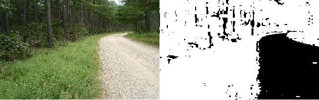
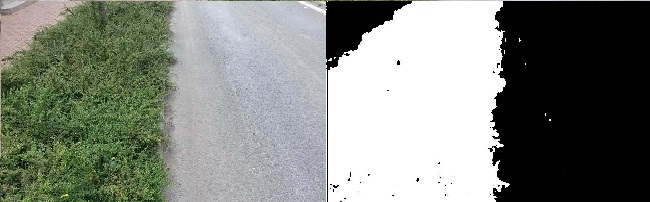
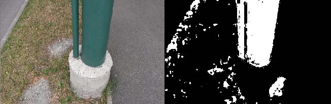
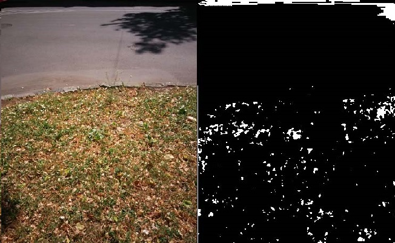
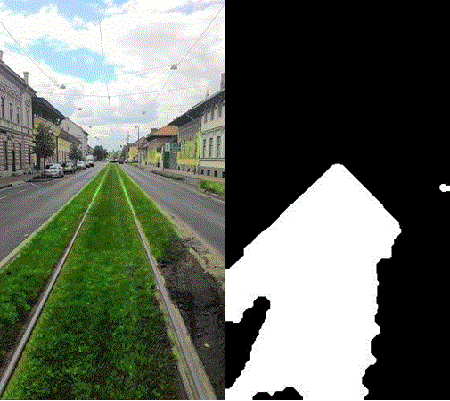
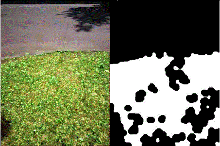

First solution
Perception of colours is very subjective and personal. To try to define numbers to the brains reaction is extremely difficult. The point of colour spaces is to assist the process of describing colour between people, machines and programs.
RGB color system, constructs all the colors from the combination of the Red, Green and Blue colors. Each of them use 8 bits, which have values from 0 to 255.
The highest determination of the RGB color model is for identifying representation, and display of images in electronic devices, for example televisions or computers. Before our ages, the RGB model already had a concrete theory behind, because of human perception of hues.
Other model of the colors representation is HSL and HSV. Both models are easy transformation of RGB models. The colors there depend of the basic components (red, green, blue primaries) and also of the gamma correction used to represent the amounts of those elements. Each RGB device has his own HSL representation to accompany it. Both of the models have advantages and disadvantages, but though this both are used extensively in computer graphics.
Bearing in mind the informations from above, we created the code in MathLab which recognized the green color from the image. This way is the easiest to distinguish the vegetation from the landscape. Of course, the flora is not always just green, that is why is needed to use post – processing to fill the gaps in defined area. The results of good examples can be seen below.


Unfortunately, the easiest solution was not the best one. Here we can present the bad results.


After that, we decided to make it more complicated.
This simple algorithm takes advantage of the fact that the vegetation is usually green colored. (grass, leafs, etc.). First of all we imported RGB image, than we used pre – processing which is: dilate all non-gray scale pixel's green channel. (Each color channels' intensity must not be 'similar'.) This step's goal is to make the detection easier of those pixels which may are a part of the vegetation regions.
Secondly we had to mark all green pixels. A pixel is considered to be green if the green channel's intensity is greater with at least 10 units than red and blue channel's one. After that we run median filter on the output binary image to decrease the salt-pepper noise which consists of fake detected or missing vegetation pixels. Than was morphologically open then close the current output image to separate the vegetation and non-vegetation regions.
Advantages of this approach are, that it detects precisely the bright green colored vegetation, and clearly skip the gray scale or blue colored objects just like the sky or the road.
Disadvantages are not so significant. The solution detects other (but not all) green objects as vegetation. It also cannot detect the dark or non-green vegetation regions just like shadows.
The results can be seen below.

